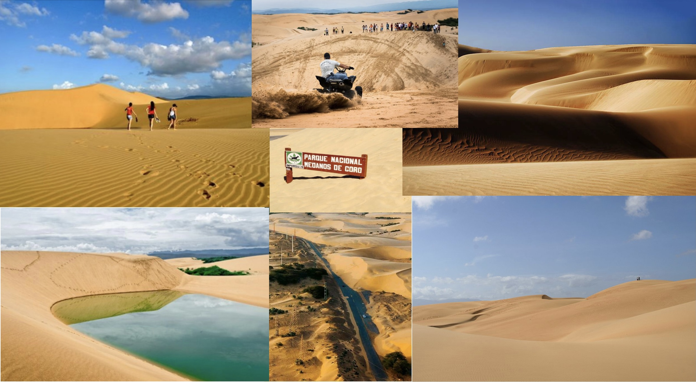

Medanos de Coro

The Medanos de Coro National park in the northwest region of Venezuela is a unique desert landscape in this tropical country with sand dunes that are over 130 feet tall. Ocean currents and the nearby beginning of the Andes mountain range prevent the region from receiving rainfall. The sand dunes formed after centuries of erosion on the rocky outcroppings from the winds from the Caribbean seas. Travel to the national park is relatively simple. The nearby cities of Maracaibo and Barquisimeto have airports from where travelers will be able to find shuttles to the city of Coro, just outside of the national park. From here travelers can schedule tours to enter the national park and rent dune buggies to enjoy the sand dunes.
